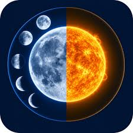
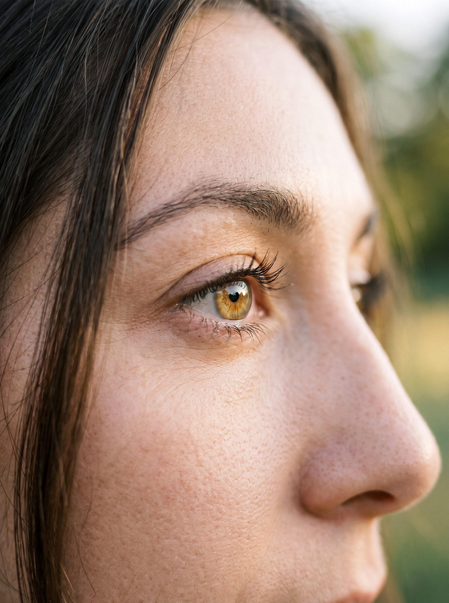
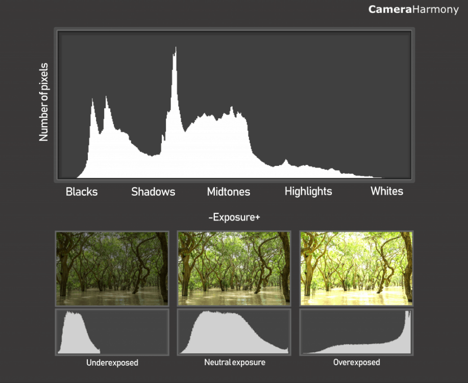
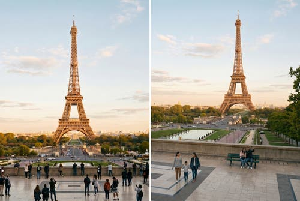
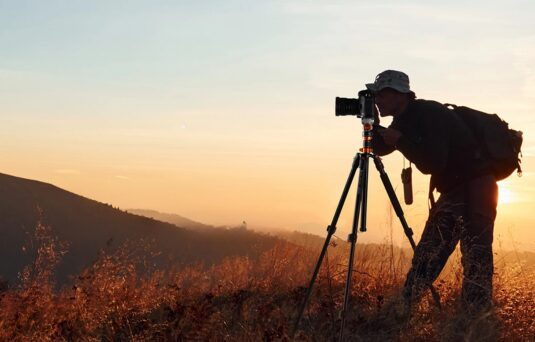
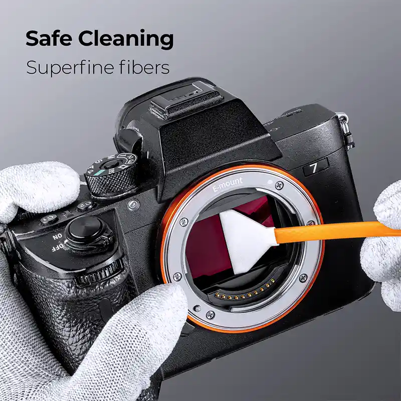

Техники от различен терен, които ще ти помогнат да избегнеш често срещани грешки и да извлечеш максимума от снимките които правиш.

Светлината по обяд е твърде остра и създава неприятни тъмни сенки под очите. Планирай снимките си около изгрев и/или залез.

При портретна фотография зрителят винаги гледа първо в очите. Ако те не са на фокус, целият кадър изглежда размазан.

Екранът на фотоапарата често лъже за яркостта, особено когато си навън в слънчев ден.

Повечето хора снимат само от нивото на собствените си очи, което прави кадрите предвидими и обикновени.

При нощни снимки и дълги експозиции дори натискането на спусъка с пръст разклаща фотоапарата.

Един мазен отпечатък от пръст върху предната леща разваля контраста и прави мъгливи ореоли около лампите.
Бърз ориентир от какви стойности да започнеш, когато нагласяш апарата в ръчен режим (M) или приоритет на бленда (Av/A):
| Сценарий / Жанр | Бленда (Aperture) | Скорост на затвора | ISO | Режим на автофокус |
|---|---|---|---|---|
| Портрет с размазан фон | f/1.2 – f/2.8 | 1/160s – 1/500s | 100 – 400 | One-Shot / AF-S + Eye-AF |
| Пейзаж (максимален детайл) | f/8 – f/11 | Според светлината (често със статив) | 100 | One-Shot / Ръчен фокус (MF) |
| Спорт и бързо движение | f/2.8 – f/4 | 1/1000s – 1/4000s | Автоматично (Auto ISO) | AI Servo / AF-C (Следящ) |
| Нощна градска фотография (от статив) | f/8 – f/11 | 2 сек. – 15 сек. | 100 | One-Shot / MF през дисплея |
| Нощно небе и звезди (Астро) | f/1.4 – f/2.8 | 10 сек. – 20 сек. | 1600 – 3200 | Ръчен фокус (MF) с 10x зум на ярка звезда |
В разговорния български – „пищов“. Шпаргалката представлява кратък наръчник със систематизирана най-важна информация на едно място. Във фотографията тя служи като бърз визуален помощник на терен – спестява време за лутане в менютата, когато светлината или ситуацията се променят динамично, и ти дава сигурна отправна точка, от която да започнеш да снимаш веднага, без да изпускаш момента.